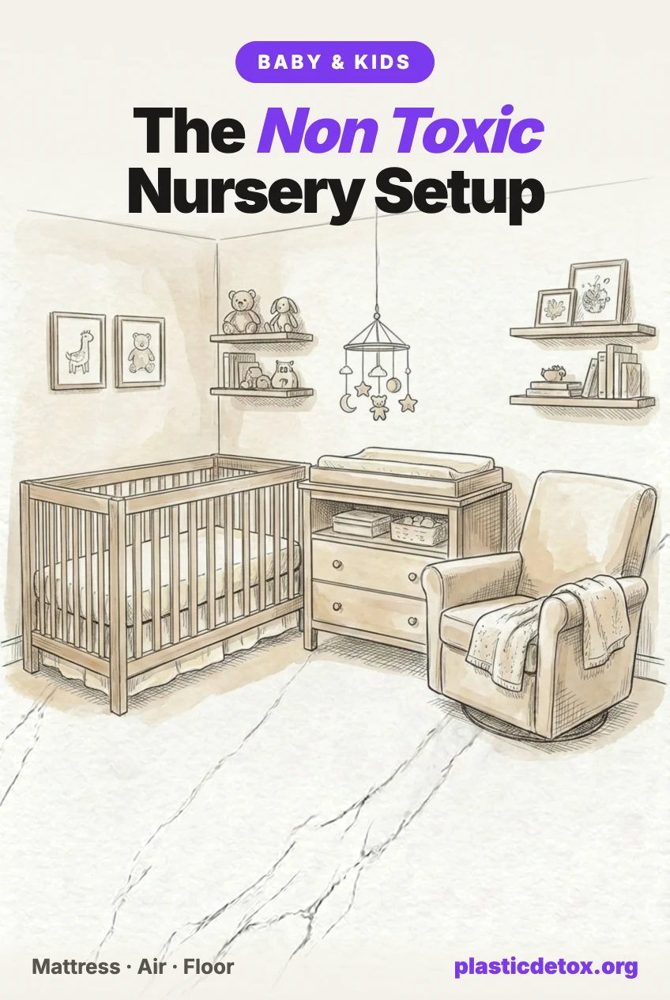

Non Toxic Nursery Setup: What Actually Matters, In Order (2026)

The 30 Second Summary
- The mattress is the whole ballgame. A newborn sleeps 14 to 17 hours a day with their face inches from it. Nothing else in the room comes close on contact time, and nothing else is as likely to contain polyurethane foam, added flame retardants, or a fiberglass flame barrier.
- Fiberglass is a real and current problem. A $9 million settlement covering Nectar, Siena, DreamCloud and Ashley mattresses got preliminary approval in March 2026 over fiberglass escaping through covers. Wool passes the same flammability rule with no fiberglass at all.
- Best mattress: Naturepedic Organic Classic, GOTS organic cotton with no foam, no fiberglass and no added flame retardants. Delta Children CleanEarth is the affordable GOTS option.
- CARB Phase 2 is not a clean label. It is a legal cap on how much formaldehyde composite wood may emit, not a promise of none. GREENGUARD Gold is the stricter mark: about half the formaldehyde and screening for over 360 compounds.
- The rug matters more than people think. Polypropylene rugs shed plastic into floor dust, and floor dust is exactly how a crawling, hand to mouth baby takes microplastics in. Wool sheds none.
- One safety point outranks every chemical on this page: the mattress must fit tight. No more than two fingers between mattress and crib side. Undersized marketplace mattresses were recalled in November 2025 over suffocation risk.
The Order That Actually Matters
Nursery guides tend to hand you a list of thirty things to replace. That is not useful when you are eight months pregnant and tired. Exposure in a nursery is dominated by a few items, and the rest barely register.
Rank by two things: how close it sits to the baby, and how many hours a day it is there. That gives a clear order.
- The crib mattress. Fourteen to seventeen hours a day, face inches away, for years. Nothing else is close.
- The air. Babies breathe faster than adults relative to body size, and the nursery is a small room with new furniture off gassing into it.
- The floor. Once crawling starts, the floor becomes the highest contact surface in the room, and it is where dust settles.
- The crib and dresser. Large surface area of finished wood or composite board, but the baby is not pressed against it.
- Sheets and sleep sacks. Direct skin contact, but thin, washed often, and easy to get right cheaply.
If you only do the first two, you have handled most of it.
The Crib Mattress
A crib mattress has to solve one problem that creates all the others: US federal law requires mattresses to resist ignition. Manufacturers can meet that with wool, which is naturally flame resistant, or with a chemical flame retardant, or with a fiberglass barrier sewn under the cover. Wool costs the most. Fiberglass costs the least.
The fiberglass problem is current, not historical
Fiberglass works by melting into a char layer when it burns. The trouble is that it can escape through the cover, and it escapes fastest when a parent unzips the cover to wash it, which is exactly what the cover being removable invites you to do.
In March 2026 a $9 million settlement covering Nectar, Siena, DreamCloud and Ashley mattresses received preliminary approval, brought by consumers who said fiberglass escaped into their homes. Those are adult mattresses, and no crib mattress brand has been through the same case. But the shortcut is the same one, and it shows up in budget crib mattresses.
The way to avoid it is not to look for the word fiberglass, because a label rarely volunteers it. Look instead for a brand that states there is none, and for wool doing the flame barrier job. Wool is the tell that the manufacturer paid for the good version.
Fit matters more than materials
A gap between the mattress and the crib wall can trap an infant's face and suffocate them. This outranks every chemical question on this page. No more than two fingers should fit between the mattress edge and the crib side. In November 2025 the CPSC recalled undersized aftermarket crib mattresses sold through online marketplaces for this exact hazard, so buy a full size mattress from a known brand and measure it in your own crib before the baby uses it.

Naturepedic Organic Classic
GOTS organic cotton fill with a food grade polyethylene waterproof surface. No polyurethane foam, no fiberglass, no added flame retardants. Two stage, firm for infants and softer for toddlers. GREENGUARD Gold and MADE SAFE.
View →
Delta Children CleanEarth Organic
Fully GOTS certified: organic cotton cover, organic wool as the flame barrier, organic latex over innersprings. No polyurethane, no fiberglass. Two stage, fits standard cribs and toddler beds. Skip it if latex allergy runs in the family.
View →
Babyletto x Avocado Organic
GOTS organic cotton with a GOLS certified natural latex core over pocketed coils. No polyurethane foam, no chemical flame retardants. Firmer feel than the cotton fill options. Heavier to lift for sheet changes.
View →
Naturepedic Waterproof Pad
Organic cotton with a food grade polyethylene backing. The cleanest waterproof layer available: no PVC, no PFAS, no vinyl smell. Machine washable. Buy two so one is always on the bed.
View →The Air in the Room
A nursery is usually the smallest bedroom in the house, and it is the one that just received a delivery of new furniture. Off gassing is heaviest in the first weeks after manufacture and falls off steeply after that, which means timing is a free intervention.
Assemble everything as early as you reasonably can, keep the window open and the door to the rest of the house shut, and let the room run for weeks rather than days. A nursery built two months before the due date is meaningfully cleaner than one built the week of, and it costs nothing.
After that, the useful addition is a sealed HEPA purifier running quietly at night. We cover which ones are worth buying, and which to avoid, in our air purifier guide, and the wider picture on bedroom air is in microplastics in bedroom air. Two rules carry over: no ionizer, no ozone function.
The Floor
This is the item most nursery guides underrate, and on this site it is the one closest to our beat.
A polypropylene rug is a plastic rug. It sheds microplastic fiber into the dust of the room as it wears, and rugs sold as stain resistant, spill proof or easy clean are usually polypropylene or coated with something similar. In most rooms that is a background problem. In a nursery it is not, because a crawling baby spends their day with their hands on the floor and their hands in their mouth, and ingesting household dust is the main route by which small children take in microplastics.
Synthetic carpet also off gasses. Indoor air research has repeatedly identified benzene, toluene, formaldehyde and 4-phenylcyclohexene, the source of new carpet smell, coming off synthetic carpet emissions.
Natural fiber solves both at once, and there are three worth knowing, each with a different trade.
Wool is the best all rounder. It resists dust and stains with no chemical finish applied, it is warm underfoot, and it is naturally flame resistant. It costs the most, and it sheds loose fiber for the first few weeks, which is wool doing what wool does rather than a defect.
Cotton is the softest against skin and the easiest to clean, which matters more than it sounds once a baby is crawling and eating off the floor. It is also the cheapest of the three. It stains more readily than wool and flattens faster under a rocking chair.
Jute is durable and inexpensive, but coarse. It suits a play corner or the area under a dresser better than the patch of floor a baby actually crawls on. Look for jute woven with cotton rather than backed with latex adhesive.
Whichever you choose, the rule from our guide to fabrics marketed as sustainable applies: the fiber is the product, and the marketing word on the label is not. Undyed or lightly dyed is the cleanest version of any of them.

Safavieh Natura Wool Rug
Handmade 100 percent wool, 5 by 8 feet, ivory. No polypropylene, no synthetic pile, no stain resistant coating. Wool resists dust and stains without a chemical finish. Sheds lightly for the first weeks.
View →
Threadvista Cotton Rug
Cotton flatweave, 4 by 6 feet, natural. Softest of these underfoot, which matters once crawling starts, and light enough to shake out or wash. No synthetic backing. Highest rated rug here.
View →
Chardin Home Jute and Cotton Rug
Hand woven jute and cotton, 5 by 7 feet, reversible. No synthetic pile or latex backing. Jute is coarser than wool or cotton, so it suits a play corner more than a crawling patch.
View →The Crib and Dresser
The concern here is formaldehyde, which is used in the adhesives that bind MDF and particleboard. Solid wood has far fewer glue layers than composite board, so it starts ahead.
Where labels are concerned, one distinction is worth knowing. CARB Phase 2 is a legal limit on how much formaldehyde a composite wood panel may emit. It is a cap, not a clean bill of health, and CARB Phase 2 compliant does not mean formaldehyde free. GREENGUARD Gold is the stricter mark: it was written for spaces holding vulnerable occupants such as children, it caps formaldehyde at roughly half the level basic GREENGUARD allows, and it screens for more than 360 individual volatile organic compounds.
The other thing to avoid is organohalogen flame retardants such as TDCPP and TCEP, which turn up in house dust and have been associated with upholstered nursery furniture in biomonitoring work. This mostly means being careful with gliders and upholstered chairs rather than with the crib itself.

DaVinci Kalani 4 in 1
Solid New Zealand pine with a low VOC finish, GREENGUARD Gold certified. Converts to toddler bed, daybed and full bed. Four mattress heights. The cheapest crib we found that is both solid wood and GREENGUARD Gold.
View →
Oeuf Sparrow Crib
Birch made in Latvia with non toxic finishes and adjustable mattress heights. Sustainably harvested wood, no glossy lacquer. Converts with a separate toddler kit. Considerably more expensive than the DaVinci.
View →Sheets and Sleep Sacks
Bedding is the cheapest thing on this list to get right, so there is no reason not to. Look for GOTS certified organic cotton, and avoid anything sold as wrinkle resistant or easy care, which usually means a formaldehyde based resin finish applied to the fabric.
For sleep sacks, merino wool is worth knowing about for the same reason it matters in a mattress: it is flame resistant without any chemical being added to it. Polyester fleece sleep sacks are the ones to skip.

Burt's Bees Baby Organic Sheet
GOTS certified 100 percent organic cotton jersey knit. No formaldehyde wrinkle resistant treatment. Softens with washing. The cheapest GOTS crib sheet we found from a brand with a long track record.
View →
Makemake Organics Crib Sheet
GOTS certified organic cotton with no formaldehyde finish and a deep snug fit, which matters because loose sheets are a suffocation risk. Holds colour through repeated hot washes.
View →
Woolino 4 Season Merino
Merino wool inner, flame resistant without added chemicals, regulating warmth across seasons so one sack covers most of the year. Sized 2 months to 2 years. Hand wash or wool cycle only.
View →The Changing Station
A changing pad is a small piece of polyurethane foam wrapped in vinyl, in most cases. The baby lies on it several times a day with bare skin, so it is worth the same scrutiny as the mattress even though the hours are shorter.
The two things to avoid are polyurethane foam, which is where added flame retardants live, and PVC or vinyl covers, which need plasticizers to stay soft. Waterproof covers are also a common place to find PFAS used as a stain repellent. Waterproofing done with food grade polyethylene instead of vinyl gets you the wipeable surface without either.

Naturepedic Organic Contoured Pad
Organic cotton fill with food grade polyethylene waterproofing. No polyurethane foam, no PVC, no added flame retardants. Contoured sides. Wipes clean, so a cover is optional rather than required.
View →
Naturepedic Changing Pad Cover
Organic cotton cover cut for the contoured pad above. No PVC or PFAS backing, unlike most waterproof covers. Buy two or three, since these wash constantly.
View →What You Can Skip
Crib bumpers, of any material
Organic cotton bumpers are still bumpers. Federal law banned the sale of padded crib bumpers in 2022 because of suffocation risk. A bare, firm, tightly fitted mattress with a fitted sheet and nothing else is the safest configuration, and it is also the cheapest.
Air purifiers with ionizers, and anything ozone generating
Ionizers and ozone functions generate ozone as a byproduct, which is a respiratory irritant, and they do it in a small room containing a person with developing lungs. A plain sealed HEPA filter with a carbon layer does the actual work. Details are in our purifier guide.
Bamboo anything, sold as natural
Bamboo fabric is nearly always bamboo viscose, made by dissolving bamboo pulp in a chemical solution and extruding it as fiber. The plant is natural. The fabric is a chemical process, and the FTC has taken action against sellers describing it as natural bamboo. Organic cotton and merino do the same job without the asterisk, which is the same argument we make in fabrics that are not what they claim.
Replacing furniture that is already a few years old
Off gassing drops steeply with age. A hand me down dresser that has been in a family for five years is emitting far less than a new composite one delivered last week, even if the old one is particleboard. Secondhand solid wood is usually the best of both. Spend the budget on the mattress instead.
Frequently Asked Questions
What is the most important thing to get right in a nursery?
The crib mattress, by a wide margin. A newborn sleeps 14 to 17 hours a day with their face inches from its surface, which is more contact time than any other object in the house. It is also the item most likely to contain polyurethane foam, added flame retardants, or a fiberglass flame barrier. After the mattress, the order that matters is air quality, then the floor the baby crawls on, then the crib frame, then bedding.
Do crib mattresses contain fiberglass?
Some mattresses use a fiberglass sock as their flame barrier, because federal law requires mattresses to resist ignition and fiberglass is the cheapest way to pass. The problem is that fiberglass can escape through the cover, especially if the cover is unzipped for washing. A 9 million dollar settlement covering Nectar, Siena, DreamCloud and Ashley mattresses received preliminary approval in March 2026 over exactly this. Those are adult mattresses, but the same shortcut appears in budget crib mattresses. The reliable way to avoid it is to buy a mattress that passes flammability with wool, which is naturally flame resistant, and to check that the brand states no fiberglass explicitly rather than staying silent.
Is GREENGUARD Gold worth looking for on nursery furniture?
Yes, it is the most useful single label in the category. GREENGUARD Gold was designed for spaces holding vulnerable occupants such as children, it caps formaldehyde at roughly half the level basic GREENGUARD allows, and it screens for more than 360 individual volatile organic compounds. That is meaningfully stricter than CARB Phase 2, which is a legal emissions limit on composite wood rather than a low emissions guarantee. CARB Phase 2 compliant does not mean formaldehyde free.
Are polypropylene nursery rugs safe?
Polypropylene is plastic, and a polypropylene rug sheds microplastic fiber into the dust of the room. That matters more in a nursery than anywhere else in the house because babies spend their floor time with their hands in their mouths, and household dust is the main route by which small children ingest microplastics. Rugs advertised as stain resistant, spill proof or easy clean are usually polypropylene or coated with it. Wool is the better choice: it is naturally stain and dust resistant without a chemical finish, and it sheds no plastic.
Does a crib mattress need to fit tightly?
Yes, and this is a safety issue that outranks every chemical question on this page. A gap between the mattress and the crib wall can trap an infant's face and suffocate them. The standard check is that no more than two fingers should fit between the mattress edge and the crib side. Undersized aftermarket mattresses sold through online marketplaces were recalled in November 2025 for exactly this hazard. Buy a full size crib mattress from a known brand and measure it against your crib before use.
How long should a nursery air out before the baby arrives?
Give new furniture, mattresses and paint as long as you can, ideally several weeks with the windows open and the door shut to the rest of the house. Off gassing is heaviest in the first weeks after manufacture and drops sharply after that, so a nursery assembled two months before the due date is meaningfully cleaner than one assembled the week of. If the timing is tight, prioritize airing out the mattress, since it sits closest to the baby's face for the longest.
Related Articles
- Non Toxic Baby and Toddler Products Guide
The wider picture across feeding, bath, clothing and play, beyond the nursery itself. - Best Air Purifiers for Microplastics
Sealed HEPA picks, and why to avoid anything with an ionizer or ozone function. - Microplastics in Bedroom Air
Why the room you sleep in carries the heaviest fiber load in the house. - Sustainable Fabrics That Are Not Sustainable
Bamboo viscose, recycled polyester, and the labels that sound green and are plastic. - The Cleanest Prenatal Vitamins
What independent testing shows about lead, cadmium and phthalates in prenatals. - The Non Toxic Baby Registry
123 vetted picks across feeding, sleep, diapers, bath and travel. No sponsored placements.